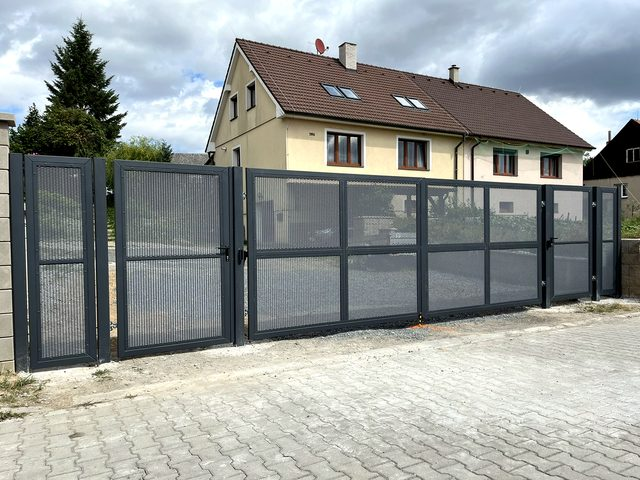
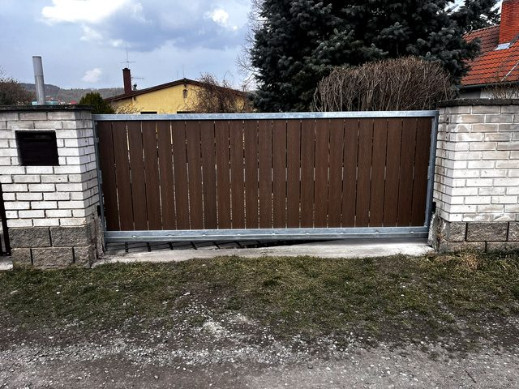
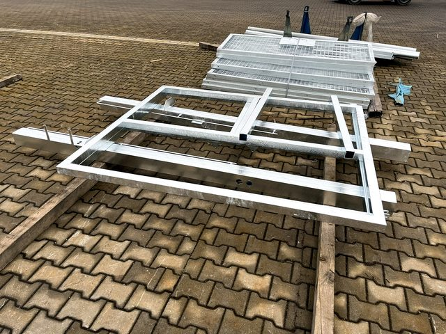
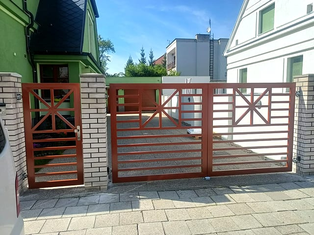

Servis garážových vrat
Opravíme vrata, která nejdou otevřít, drhnou, zastavují se nebo nereagují na ovladač. Řešíme seřízení, pohony, ovládání i běžné servisní díly.
Více o servisu garážových vratPraha a Středočeský kraj
Vyrobíme a namontujeme vrata na míru, opravíme stávající vrata nebo bránu a doplníme pohon, motor či ovládání. Řešíme také závory a automatické dveře pro domy, firmy i SVJ v Praze a Středočeském kraji. Nejrychlejší je zavolat.
Co řešíme
Nejprve zjistíme, co se se zařízením děje. Když stačí oprava nebo seřízení, vyřešíme servis. Pokud je vhodnější modernizace, navrhneme úpravu, nový pohon nebo kompletní dodávku vrat na míru od zaměření po montáž s motorem.
Opravíme vrata, která nejdou otevřít, drhnou, zastavují se nebo nereagují na ovladač. Řešíme seřízení, pohony, ovládání i běžné servisní díly.
Více o servisu garážových vratPomůžeme, když se brána zastavuje, drhne, nedojíždí nebo nereaguje na ovladač. Kontrolujeme mechaniku, pohon, koncové polohy i bezpečnostní prvky.
Více o servisu branZajišťujeme kontrolu, seřízení a servis automatických dveří pro provozovny, firmy, SVJ, bytové domy a veřejné objekty.
Více o automatických dveříchŘešíme závory, které blokují vjezd, neotevírají se správně nebo omezují provoz areálu, firmy či bytového domu.
Více o servisu závorZaměříme prostor, navrhneme vhodné řešení, vyrobíme vrata na míru a zajistíme dodání, montáž, pohon, ovládání i zprovoznění.
Více o vratech na míruPoradíme, když chcete zachovat starší zařízení, doplnit pohon, změnit ovládání nebo zjistit, jestli se oprava ještě vyplatí.
Domluvit konzultaci úpravyRealizace a ukázky práce
Fotky ukazují reálnou práci na garážových vratech, posuvných a křídlových branách, pohonech, závorách i výrobě vrat na míru. Podobné realizace řešíme pro rodinné domy, firmy a SVJ v Praze a Středočeském kraji.






Chcete opravu, modernizaci nebo podobnou montáž? Zavolejte a domluvíme servis, zaměření nebo konzultaci.
Zavolat 777 286 310Proč zavolat právě nám
U servisu rozhoduje zkušenost, přesná diagnostika a férové doporučení. Řekneme, jestli dává smysl oprava, seřízení, výměna dílu, modernizace pohonu nebo nové řešení na míru. Za provedenou prací si stojíme.
Zavolejte a domluvíme servis, zaměření nebo konzultaciKde působíme
Jezdíme k rodinným domům, firmám, SVJ, bytovým domům i provozovatelům areálů v Praze a Středočeském kraji. Nejčastěji řešíme servis garážových vrat, opravy posuvných a křídlových bran, servis závor a automatických dveří. Pokud staré řešení nestačí, dodáme vrata na míru včetně pohonu, ovládání a montáže.
Lokální služby
Telefonát bývá nejrychlejší ve chvíli, kdy vrata nejdou otevřít, pohon nereaguje nebo vjezdový systém omezuje provoz. Pomůžeme se servisem, montáží i novým řešením na míru v Praze a Středočeském kraji.
Jak spolupráce probíhá
Stačí říct, kde zařízení je, o jaký typ se jedná a co přesně nefunguje. Fotka vrat, brány, pohonu nebo závory nám pomůže rychleji odhadnout další postup.
Podle závady, lokality a naléhavosti domluvíme nejbližší možný termín. U nových vrat si domluvíme zaměření a technickou konzultaci.
Zařízení zkontrolujeme, opravíme a seřídíme. U nového řešení zajistíme výrobu, dodání, montáž pohonu, ovládání a zprovoznění.
Typické situace
Časté dotazy
Záleží na lokalitě, typu závady a aktuálním vytížení. Nejrychlejší je zavolat, stručně popsat problém a rovnou vám řekneme nejbližší možný termín.
Ano. Servisujeme a upravujeme i stávající vrata, brány, pohony, automatické dveře a závory, které jsme původně nemontovali.
Po kontrole navrhneme rozumný postup. Když dává oprava smysl, opravíme. Když by byla jen krátkodobá nebo neúměrně drahá, doporučíme modernizaci nebo nová vrata na míru.
Ano. Zajistíme konzultaci, zaměření, návrh, výrobu vrat na míru, dodání, montáž vrat s motorem, ovládání, zprovoznění i následný servis.
Pomůže lokalita, typ zařízení, stručný popis závady a případně fotka vrat, brány, pohonu nebo závory. Díky tomu rychleji odhadneme další postup.
Pro rodinné domy, firmy, SVJ, bytové domy, instituce a provozovatele areálů v Praze a Středočeském kraji.
Cena se odvíjí od typu zařízení, závady, dílů a dojezdu. Po telefonu si upřesníme situaci a navrhneme nejrozumnější postup, aby zákazník neplatil zbytečné zásahy.
Ano, pokud je zařízení technicky vhodné a bezpečné. Umíme doplnit pohon, motor, ovládání nebo upravit stávající řešení tak, aby lépe fungovalo v běžném provozu.
Ano. Pracujeme hlavně v Praze a Středočeském kraji, například v okolí Prahy, Kladna, Berouna, Mělníka, Benešova, Příbrami, Kolína, Kutné Hory nebo Mladé Boleslavi.
Ano. Probereme prostor, způsob používání, požadavky na pohon a ovládání, zaměříme otvor a navrhneme kompletní dodávku vrat včetně montáže a zprovoznění.
Kontakt
Řekněte nám lokalitu, typ zařízení a co se stalo. U servisu domluvíme nejbližší možný termín. U nových vrat navrhneme zaměření, výrobu, dodání a montáž včetně motoru a ovládání.